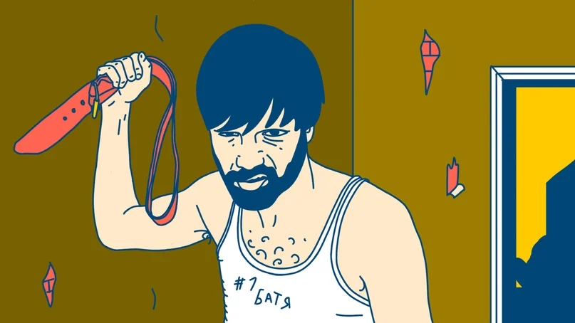
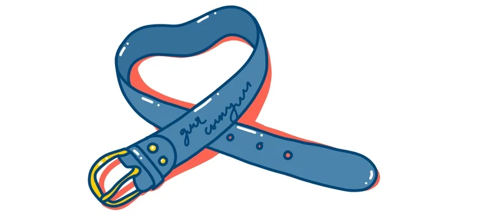

Согласно недавним исследованиям, треть россиян одобряет физические наказания в отношении детей. Что ж, Данила Блюз поддерживает старую поговорку «Пожалеешь розгу — испортишь ребенка» и вспоминает свое детство. А заодно приводит примеры великих, которым тоже доставалось по жопе от родителей.

Нет, детей надо обязательно пороть! Бесстрастно, хладнокровно, планомерно, без ожесточения в сердце пороть. Не понимаю, как нынешние родители могут жить в одном помещении с этими бездушными выродками и не пороть их? Смотрю, младенец кирпичом в голубя бросает, урну переворачивает, по лужам специально скачет, чтобы брызги нормальным людям на штаны попадали, а мамаше хоть бы хны, скажет равнодушно: «Андрюшенька, не балуйся» — и все. А надо взять Андрюшеньку и сказать ему, глядя в глаза, твердо, со всей серьезностью: «Андрюшенька, еще одна такая выходка — и я тебя высеку так, что у тебя жопа в кровавый фарш превратится!» И если ослушается — привести угрозу в исполнение, невзирая на слезы, мольбы и уговоры.
Я рад, что по данным недавних опросов треть россиян поддерживает применение физических наказаний. Значит, у этого поколения есть еще шанс вырасти более-менее порядочным.
«По результатам опроса, каждый третий житель страны считает возможным использовать жесткие насильственные методы воспитания детей, а 68% — применять «мягкие» формы физических наказаний хотя бы в редких, исключительных случаях. Подзатыльник или шлепок представляются более безобидными формами «приведения ребенка в чувство», чем крик, брань или иные формы эмоционального давления», — приводит агентство «Москва» текст исследования.
Не знаю, что бы из меня выросло, не дай мне родители в свое время ремня по жопе. Мелкий я был натуральным дьяволом с ангельским личиком. Я затевал драки со сверстниками просто так, из какой-то бессмысленной удали, ломал все подряд, вырывал цветы из клумб, бил стекла, поджигал покрышки и мусорки, тягал кошек за хвосты, швырялся грязью в прохожих и много чего еще вытворял.
Бабушка моего друга детства Димаса как-то рассказывала, когда мы, уже взрослые лбы, сидели за столом на дне его рождения: «Я Диме в детстве говорила: не водись с Данилой, он тебя плохому научит! Выхожу как-то раз во двор, а там Данила маленький стоит на горке и на всю улицу орет матом: «****! ****! ****!», и довольный такой!»
Права была бабушка, сейчас Димка в тюрьме — сказалось мое злое влияние. Может, и я бы там оказался, пожалей меня когда-то мама с папой. Но слава богу, родители мои были тоже не либерального воспитания — об батину спину дед как-то погнул ударом алюминиевую швабру. Зато тот вырос человеком.

Да и вообще, сколько чудесных людей выросло из-под отцовского ремня! «По плодам их узнаете их» — говорил Господь наш. Вот, скажем, Тургенева мать порола постоянно и жестокосердно по любому, даже несправедливому навету. И кто у нас вырос? Великий гуманист и писатель!
Максима Горького тоже лупили. Позже в своем бессмертном романе «Детство» он писал: «С тех дней у меня явилось беспокойное внимание к людям, и, точно мне содрали кожу с сердца, оно стало невыносимо чутким ко всякой обиде и боли, своей и чужой». А если бы дед не порол Алешеньку? Черт знает кем бы он в итоге стал. Обпился бы водки да захлебнулся в сточной канаве, не сочинив нам ни «Песню о Буревестнике» ни «Старуху Изергиль».
Знаток воспитания Павел I поручил воспитывать своего сына Николая I генералу Ламздорфу, который постоянно давал будущему императору по шее и записывал каждую экзекуцию в специальный журнал. Ну и что же? Прекрасный вырос правитель, Османскую империю побил несколько раз, Пушкина из ссылки вернул, да и так по мелочи тоже немало хорошего сделал для Отчизны.
А Сталин! Фигура, конечно, спорная, но то, что фигура замечательная, историческая — тут уж никто не поспорит. И что вы думаете? Да, отец Сталина был сапожником и алкоголиком и часто, придя домой пьяным, лупил жену и сына, вплоть до того, что маленький Коба мочился кровью.
А кто лупил Гитлера? Никто не лупил! Гитлер рос в атмосфере любви и обожания со стороны своей матушки. Ну и что? Вот именно, делайте выводы! С одной стороны маленький, хромоногий, изъеденный оспинами Сталин, которого папка лупил оторванной сапожной подошвой, с другой — розовощекий, в кружевах и рюшечках малыш Гитлер, которого мама с ложечки кормит штруделем. А посередине Черчилль, на которого родителям вообще было наплевать, они не занимались его воспитанием, перепоручив это дело старой няньке.
Мне самому не доводилось воспитывать детей — своих у меня нет, а чужих мне не доверяют, но однажды мне тоже пришлось применить силу к ребенку. Зашел как-то раз к одной мадам с двумя полторашками пива. Выпили, я у нее переночевал, а утром ей надо было помочь с какой-то херней, не помню уже с какой. Суть в том, что мне с похмелюги пришлось куковать у нее дома «в ожидании Годо». Вместе с ней и ее дебиловатым сыном лет шести-семи.
Ребенок насмотрелся своих мультиков для дебилов и начал задалбывать меня. Он кидался мусором, тыкал мне в лицо пальцами, пинался, плевался. Вы скажете: «Ну он просто хотел поиграть с тобой!» Я тоже так подумал, пробовал играть с ублюдком, но тому просто нравилось меня бесить. Мамаша пыталась объяснить этому злому карлику, чтобы он отстал от дяди, но тот делал вид, что не понимает человеческую речь, и продолжал меня изводить. Я тоже старался повлиять на выродка словами, говорил ему: «Сжалься, я же живой человек! Оставь меня в покое ради Христа, ради всего святого! Загляни в свою душу, найди там хоть каплю милосердия!» Но нет, карапет был глух к моим мольбам. Видимо, маленький избалованный Эдип ревновал к матери и дал себе зарок сжить меня со свету.
Наказывать детей надо бесстрастно, как я говорил выше, чтоб они понимали: это не со зла, не потому что их ненавидят. Просто так надо, это закон — ты переступил черту и теперь взрослый вынужден тебя наказать, такова природа вещей. Но тогда я получил просто несказанное удовольствие от слез этого маленького сукиного сына! Когда он снова начал доставать меня, я схватил скакалку, лежавшую рядом, и так смачно, с оттягом два раза хлестанул по его маленькой вонючей жопе в колготках! Черт, я думал, его задница лопнет от удара — я бил со злобой, наотмашь, как работорговцы лупили хлыстами негров в фильме «Джанго освобожденный». Сучонок подлетел чуть не до потолка, взвыл, потом заревел, как сирена гражданской обороны, и побежал показывать свою исхлестанную жопу мамке, которая, кажется, в этот момент срала.
Я подумал, что сейчас грянет скандал, мать начнет заступаться за побитое дитя, и решил про себя: «Ну и черт бы с ней! Будет возникать — отхлещу скакалкой и ее тоже, да уйду наконец из этого дурдома». Но мамашке, видимо, позарез была нужна моя помощь (какой-то шкаф надо было затащить в квартиру или холодильник), и она сказала зареванному манипулятору: «Правильно дядя тебя отлупил, нельзя доставать дядь!» Хитрый дебил понял, что эта партия проиграна и, размазав сопли ��о лицу, угрюмо сел ломать своих трансформеров. Я же в эти секунды молча торжествовал, нисколько не жалея своего поверженного оппонента.
Надеюсь, два удара скакалкой пошли на пользу этому куску дерьма, и он вырастет Тургеневым или Горьким. А спустя годы вспомнит меня добрым словом в своих мемуарах.